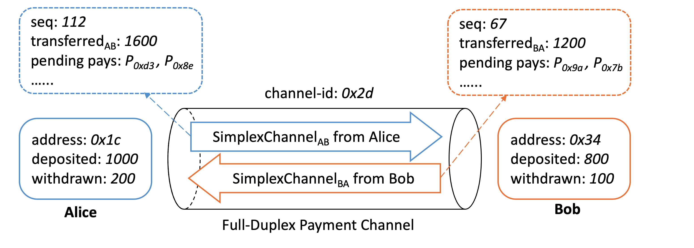
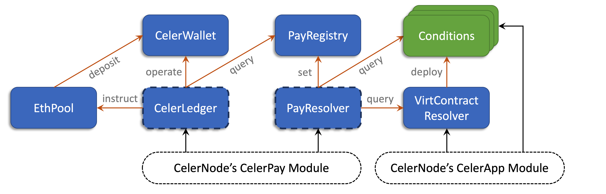

CelerPay On-Chain Contracts¶
This section describes the core structure of the Celer generalized payment channel, its smart contracts design, and the API flows of on-chain operations.
CelerPay contracts have been implemented on Ethereum, which can be found at cChannel-eth. It includes a collection of smart contracts acting as the binding of core CelerPay abstractions and supporting modules. CeleryPay smart contracts only specify the interaction logic of two peers. A network of payment channels can be built using these single-hop primitives and protocols, which will be described in the later off-chain protocol section.
Core Data Structures¶
We first introduce the structures of core elements. The whole design of CelerPay is centered around the concepts of duplex payment channel and conditional payment. It is essential to understand how these two elements are defined and connected, and how they are optimized to improve performance and cost-efficiency.
Duplex Payment Channel¶
 Figure above shows the logical data model of a CelerPay state channel between Alice and Bob. Note that not all information is needed to be stored on-chain. The model consists of two types of data about the payment channel peers:
- On-chain states shown in the solid boxes, mainly include peer addresses and amount of tokens they have deposited and withdrawn. Both the on-chain smart contracts and off-chain peer nodes maintain the full record of the on-chain states.
- Off-chain simplex states shown in the dashed boxes, mainly include the amount of tokens the peers have transferred to each other, their pending pays, and the state sequence numbers. The peers pay each other off-chain by co-signing new simplex states. The contracts do not store the full simplex states, only take them as function call inputs for critical on-chain operations.
CelerPay uses full-duplex channel model for performance reasons. By decoupling the shared off-chain states into two unidirectional simplex states, two peers can pay each other concurrently. This significantly simplifies the off-chain protocol and improvements the off-chain payment throughput, as will be described in the off-chain protocol section.
Simplex channel state¶
We define a simplex state using protobuf as below, with proto3 field option used for Solidity native types to support smart contracts running on EVM.
// the simplex channel state from one peer to another
// two simplex channels constitute a full-duplex channel
message SimplexPaymentChannel {
// unique channel ID per duplex channel
bytes channel_id = 1 [(soltype) = "bytes32"];
// address of the peer who owns and updates the simplex state
bytes peer_from = 2 [(soltype) = "address"];
// simplex state sequence number
uint64 seq_num = 3 [(soltype) = "uint"];
// amount of token already transferred to peer, monotonically increasing
TokenTransfer transfer_to_peer = 4;
// list of pending conditional payment IDs
PayIdList pending_pay_ids = 5;
// the last resolve deadline for all pending pays
uint64 last_pay_resolve_deadline = 6 [(soltype) = "uint"];
// total locked amount of all pending pays
bytes total_pending_amount = 7 [(soltype) = "uint256"];
}
This proto data representation is shared by the off-chain protocol and the on-chain smart contracts of all layer-1 blockchains. A simplex state is only valid if it is co-signed and has the highest sequence number. Given two valid simplex states and the on-chain states of a duplex channel, one can compute the peer balances at any time. For example, the available balance of peer A for its next payment is: A.available = A.deposit - A.withdraw + B.transfer - A.transfer - A.pending
List of pending pay IDs¶
Details of the payment-related fields in the simplex state proto will be explained later. One thing to emphasize here is how the summary of all pending conditional payments are stored in the simplex state (field 5). We do not use Merkle proof because maintaining the Merkle root for a highly dynamic dataset is computationally expensive; and it also greatly increases the number of on-chain transactions during the dispute process. Instead, the list of pending pay IDs is stored in the simplex state directly. Sending or clearing a conditional payment off-chain is simply adding or removing the payment ID from the list (field 5), and updating the transfer amount (field 4) if needed. On-chain contracts never need to store the pending pay IDs; they only need to scan the list from the input and compute the outcome in one transaction, as will be detailed in later sections. The proto message below shows the structure of the pending pay list used in the simplex state.
// linked list of payID list to record arbitrarily number of pending pays
// used in SimplexPaymentChannel field 5
message PayIdList {
// list of pay IDs
repeated bytes pay_ids = 1 [(soltype) = "bytes32"];
// hash of the next PayIdList
bytes next_list_hash = 2 [(soltype) = "bytes32"];
}
All layer-1 blockchains have a gas limit to restrict how big data a single transaction can process. To overcome this restriction, we use a linked list of lists data structure to support a potentially large number of pending pays. In practice, we expect a single list should be enough for most cases. For example, in Ethereum, we can put at least hundreds of pay IDs in the list within the simplex state to be processed in a single transaction.
Conditional Payment¶
Another key data structure of CelerPay is conditional payment, which is a conditional token transfer from one peer to another in the unidirectional simplex channel. The payment outcome can depend on multiple on-chain or off-chain conditions, with flexible condition resolving logics. Below is the proto representation of a conditional payment:
// globally unique and immutable conditional payment
// hash of the message is used to compute the pay ID in PayIdList field 1
message ConditionalPay {
// the unix nanoseconds timestamp, help ensure payment uniqueness
uint64 pay_timestamp = 1 [(soltype) = "uint"];
// public key used by pay source to vouch the pay result
bytes src = 2 [(soltype) = "address"];
// public key used by pay destination to vouch the pay result
bytes dest = 3 [(soltype) = "address"];
// list of generic conditions for the payment
repeated Condition conditions = 4;
// payment amount resolve logic based on condition outcomes.
TransferFunction transfer_func = 5;
// deadline for the pay to be resolved on-chain
uint64 resolve_deadline = 6 [(soltype) = "uint"];
// challenge time window to resolve a pay on chain
uint64 resolve_timeout = 7 [(soltype) = "uint"];
// address of the pay resolver contract
bytes pay_resolver = 8 [(soltype) = "address"];
}
All the fields are set by the pay source and are immutable while being relayed across multiple hops. Fields 2-8 are all useful when resolving a payment on-chain. The globally unique ID of a conditional payment is computed through the payment hash concatenated with the resolver address (field 8): payID = Hash(Hash(pay) + pay.pay_resolver), which will be explained later.
Note on decoupled architecture:
The key members of a conditional payment are conditions and transfer_func. Condition can point to an address of an on-chain or virtual contract, with an assumption that the contract has an interface to check the finality and outcome of the condition. TransferFunction interprets the condition outcomes and resolves them to the final result regarding the allocated fund in the conditional payment. This decoupling of fund allocation and resolution leads to high flexibility, simplicity, robustness, and cost-efficiency.
Condition¶
Each payment can be associated with a list of Condition, and a resolving logic TransferFunction which takes the conditions as input.
// condition of a payment, used in ConditionalPay field 4
message Condition {
// three types: hash_lock, deployed_contract, virtual_contract
ConditionType condition_type = 1;
// one of the following three fields:
// 1. hash of the secret preimage
bytes hash_lock = 2 [(soltype) = "bytes32"];
// 2. onchain deployed contract
bytes deployed_contract_address = 3 [(soltype) = "address"];
// 3. offchain virtual contract
bytes virtual_contract_address = 4 [(soltype) = "bytes32"];
// arg to query condition status from the deployed or virtual contract
bytes args_query_finalization = 5;
// arg to query condition outcome from the deployed or virtual contract
bytes args_query_outcome = 6;
}
Message above shows the proto representation of a condition. There are three condition types:
- Hash Lock Condition. This is used to secure a multi-hop payment. The payment source includes a hash
h(field 2) of a secret preimage as a condition. The payment can only be resolved on-chain if the hash preimagevis revealed. Though hash lock could be also expressed through the contract conditions below, we separate it for protocol performance optimization. - Deployed Contract Condition. The condition could be based on the state of an on-chain deployed contract (field 3), which is able to implement arbitrary application logic. Such a contract needs to expose
isFinalizedandgetOutcomeAPIs for the CelerPay contracts to query the states of the condition through arguments given in fields 5 and 6. The outcomes can be derived from state channel application results, oracle contract outputs, on-chain NFT ledgers, ENS name ownerships, roll-up chain states, etc. - Virtual Contract Condition. The condition can also stay off-chain as a virtual contract counterfactually instantiated by involved parties (e.g., payment source and destination). A virtual contract only needs to be deployed on-chain if someone wants to dispute, in which case CelerPay can find where to call the
isFinalizedandgetOutcomeAPIs through a unique identifier (field 4) computed by the hash of the virtual contract code, initial states, and a nonce.
Note on decoupled architecture: getOutcome is a generic interface to get some data from the dependency contract that can be interpreted into arbitrary resolution results on the committed fund for the payment. While there are some common cases that we have implemented and optimized, this clean decoupling of application logic and fund allocation protocol allows the maximal level of flexibility.
Transfer function¶
Given the list of conditions, one can compute the payment amount according to the transfer_func field in the ConditionalPay message once all conditions have outcomes. Condition outcomes can be a boolean or numeric value. CelerPay supports flexible functionalities to resolve the payment amount based on condition outcomes. Below is the proto of the transfer function.
// payment result resolving function, takes pay.conditions as input
// used in ConditionalPay field 5
message TransferFunction {
// amount resolving logic based on the condition outcome
TransferFunctionType logic_type = 1;
// maximum token transfer amount of this payment
TokenTransfer max_transfer = 2;
}
enum TransferFunctionType {
BOOLEAN_AND = 0; // pay full amount if every condition is true
BOOLEAN_OR = 1; // pay full amount if any condition is true
BOOLEAN_CIRCUIT = 2; // customized boolean circuit logic, not supported yet
NUMERIC_ADD = 3; // pay the sum of all condition outcomes
NUMERIC_MAX = 4; // pay the max of all condition outcomes
NUMERIC_MIN = 5; // pay the min of all condition outcomes
}
To summarize, ConditionalPay is a self-contained unit that carries all the information related to a conditional payment. We will elaborate how to send/receive a payment off-chain and how to resolve a payment on-chain in case of dispute in later sections.
Contracts Architecture¶
 Figure above shows the CelerPay contracts architecture of our current Ethereum implementation. White dashed modules at the bottom are user off-chain components. Each colored rectangle is an individual on-chain contract. Blue modules are CelerPay contracts (ones with dashed border are upgradable); green modules are external arbitrary condition contracts; orange arrows are external function calls (with single-word functionality summaries) among contracts; black arrows are external function calls from CelerNodes (off-chain users).
The major reason to have multiple contracts is to enable efficient module upgrade, which will be discussed later. This section gives a high-level walkthrough of all the CelerPay contracts, explains their roles and relationships. The detailed CelerPay on-chain functionalities and logics will be discussed in the channel operations section.
CelerWallet¶
The CelerWallet contract keeps the multi-owner and multi-token wallets for all the payment channels. CelerWallet only holds tokens for the channel peers without any complicated payment channel logics, which are programmed in the CelerLedger contract. It is extremely robust and safe due to its simplicity. Payment channel peers (CelerNodes) do not directly interact with the CelerWallet contract to operate their funds, but through the wallet operator: the CelerLedger contract, which we describe below.
CelerLedger¶
CelerLedger is central of all CelerPay contracts, and the entry point of most of the on-chain user operations. It defines the CelerPay on-chain state machine, maintains the core logic of a payment channel, acts as the operator of CelerWallet to operate on the token assets, and expose a rich set of APIs for users (channel peers) to manage the payment channels. CelerLedger calls the external functions of three contracts when executing its logic:
- To CelerWallet: operation on CelerWallet to deposit/withdraw funds, or transfer operatorship.
- To EthPool: transfer ETH to CelerWallet, enable the single-transaction channel opening.
- To PayRegistry: query about the resolved payment amount when settling a channel.
Notes on Ethereum Implementation. CelerLedger has complicated logic which could lead to a very large single contract that exceeds the Ethereum’s 24KB contract size limit (EIP #170). To overcome this limitation, we leverage techniques of Library Driven Development in Solidity to reconstruct the CelerLedger logic by dividing different functionality modules into separated deployable libraries.
PayResolver¶
PayResolver defines the payment resolving logic. It exposes two APIs to let a CelerNode resolve a payment on-chain if it cannot clear the payment off-chain with its channel peer cooperatively. PayResolver call external functions of other contracts when executing its logic:
- To PayRegistry: set the resolved payment amount in the global payment information registry.
- To Conditions: query the condition outcomes when computing the payment finalized amount.
- To VirtContractResolver: query the address of an instantiated (deployed) virtual contract.
PayRegistry¶
PayRegistry is the global registry to store the resolved amount of all payments. It exposes simple APIs for anyone to set a payment result indexed by the payment ID. PayRegistry calculates the payment ID as payID = Hash(Hash(pay), setterAddress), where setter is usually the PayResolver. In this way, each payment’s result can only be set in the registry by its self-specified resolver contract (field 8 of the ConditionalPay message). A payment result becomes immutable and publicly available once it is finalized on the PayRegistry. Then all channels that have the payment in pending status can use the result from the registry to clear the payment either off-chain or on-chain.
VirtContractResolver¶
VirtContractResolver instantiates an off-chain virtual contract and establishes the mapping from the virtual contract address (field 4 of Condition Message) to the instantiated on-chain address. It makes the virtual contract become an on-chain addressable condition contract for the PayResolver to query when resolving payments associated with the virtual contract condition.
EthPool¶
EthPool is a simple ETH wallet contract that provides ERC20-like APIs for ETH, and an additional API to make ETH deposit into CelerPay more flexible and efficient. EthPool enables the single-transaction channel opening feature of CelerPay.
Conditions¶
Conditions are not part of the CelerPay contracts, but external CelerApp contracts for the PayResolver to query through the isFinalized and getOutcome APIs when resolving payments. A condition contract can be either an initially on-chain deployed contract, or an instantiated virtual contract. Any contract can become a CelerPay condition by exposing the two required APIs.
Channel Operations¶
This section describes the detailed mechanisms of the major CelerPay user on-chain operations, including open channel, deposit/withdraw funds, resolve payments, and close channel. Though CelerPay expects most of the payment transactions happen off-chain, it is still deeply optimized for handling the infrequent but inevitable on-chain operations.
CelerLedger manages the payment channel on-chain state and serves as the primary entry point for user on-chain operations. There are five possible states for each payment channel:
Uninitialized: a channel that has not been set up yet in the current CelerLedger contract.Operable: a channel that is active for regular use.Settling: a channel that is in the unilateral settling state.Closed: a channel that is closed.Migrated: a channel that has been migrated to another CelerLedger contract.
Open Channel¶
The CelerLedger contract exposes an openChannel API which allows a funded payment channel to be opened a single transaction. The API takes a single input, which is the channel peer co-signed payment channel initializer message. Once the CelerLedger contract receives a valid open channel request, it will execute the following operations in a single transaction:
- Create a wallet in the CelerWallet contract and use the returned wallet ID as the channel ID, which is computed as
Hash(walletAddress, ledgerAddress, Hash(channelInitializer)). - Initialize the channel state in the CelerLedger contract.
- Accept the blockchain native tokens (ETH) sent along with the transaction request, and transfer tokens from the peers’ approved token pools (e.g., EthPool or ERC20 contracts) to the CelerWallet according to the requested initial distribution amounts.
Deposit¶
Anyone, not only the channel peer, can deposit funds into a payment channel by calling the deposit API of CelerLedger. The API takes three arguments: the channel ID, the receiver address, and the deposit amount. The CelerLedger contract will check if the token type matches and then transfer the tokens from the API caller to the channel’s wallet in the CelerWallet contract.
Note that though all tokens are eventually deposited in the CelerWallet contract, any prerequisite approve transactions for ERC20 or EthPool tokens must be given to the CelerLedger contract.
Withdraw¶
Peers can withdraw funds from the channel anytime. CelerLedger supports both cooperative and unilateral withdrawals. The former is a fast single transaction, while the latter involves two transactions and challenge time window.
Cooperative withdraw¶
When both peers are online and cooperative, the withdrawer can finish the operation within one quick transaction by calling the cooperativeWithdraw API and submitting the peer co-signed cooperative withdrawal message. Once the co-signed message is submitted, the CelerLedger contract will transfer the tokens from the channel’s wallet in the CelerWallet contract to either the account address or another channel as specified in the co-signed withdrawal message.
Unilateral withdraw¶
When the withdrawer is not able to find its peer to co-sign the above cooperative withdrawal message, it can initiate a unilateral withdraw by calling the intendWithdraw function, which takes the channel ID, withdrawal amount, and the optional recipient channel ID as inputs. Once the transaction is submitted, the challenge time window is opened for the other peer to call vetoWithdraw if it does not approve the withdrawal. After the challenge window closed, if the other peer did not veto, the withdrawer can call confirmWithdraw to finish the operation.
Resolve Payment¶
When peers cannot cooperatively clear a payment off-chain, they can resolve the payment on-chain through APIs of the PayResolver contract before the payment resolve deadline (field 6 of the ConditionalPay Message), which writes the result in the global PayRegistry. A payment can be resolved on-chain either by the payment condition results or the vouched result co-signed by the payment source and destination.
Resolve payment by conditions¶
One can call the resolvePaymentByConditions API of the PayResolver once all conditions of a payment are finalized on-chain. The API input consists of two pieces of information: 1) the full conditional payment data and 2) all hash preimages of the hash locks associated with the payment. Then the PayResolver will verify the hash preimages, query the condition outcomes, then compute and set the payment result in the PayRegistry, as depicted in the contracts architecture figure.
Whoever tries to resolve a payment by conditions needs to make sure the conditions are all finalized on-chain, otherwise the transaction will fail. Conditions on virtual contracts need to be first instantiated on-chain through the VirtContractResolver contract. These are considered as parts of the CelerApp instead of the CelerPay operations.
Only the payment source or destination may initiate the transaction to resolve a payment by the conditions. An intermediate relay node never calls this API for a payment. The later off-chain protocol section will explain the flow in detail.
Resolve payment by vouched result¶
The payment relay node never needs to care about the internal conditions, but only the amount they should safely receive from upstream and pay to the downstream. CelerPay provides a unique feature to let relay nodes quickly resolve a payment on-chain with their peers through the vouched result co-signed by the source and destination (field 2 and 3 of the ConditionalPay message).
As will be elaborated in the off-chain protocol section, every node along the payment route can use that as a proof to ask its upstream peer to clear the payment according to the vouched amount. Any node who has the co-signed vouched result can call the resolvePaymentByVouchedResult API to resolve this payment on-chain and set the result in the PayRegistry.
Dispute the payment result¶
All CelerNodes along a payment route share the result of the payment in the PayRegistry. Proper on-chain and off-chain mechanisms are required to guarantee the security of the relay nodes in case of colluding payment source and destination co-sign different vouched results or manipulate the condition outcomes maliciously. PayResolver writes a payment result to the PayRegistry according to the following rules:
- If the resolving result equals to the maximum amount of the transfer function (field 5 of the ConditionalPay message), the result is instantly finalized in the PayRegistry.
- Otherwise, a challenge time window (according to field 7 of the ConditionalPay message) is opened for others to resolve the same payment (with potentially different input messages). Once a result is written in the PayRegistry, it can only be updated to a larger amount before finalization, which is a joint design with the off-chain protocol. The payment result gets finalized after the challenge window closed or the resolve deadline passed, whichever comes earlier.
Settle/Close Channel¶
A CelerNode can choose to settle/close a channel with its peer either cooperatively or unilaterally, similar to the withdrawal operation. Cooperative settling is the preferred method as it is a fast single transaction. Unilateral settling only happens when two peers cannot agree with each other, or one peer cannot be found to co-sign the cooperative settle request.
Cooperative settle¶
The CelerLedger contract exposes a cooperativeSettle API which the peer co-signed cooperative settle request information as input. Once the contract receives the co-signed request, it will close the channel and distribute the balances according to the requested amounts. Both off-chain simplex channel states including all the pending payments will be ignored when executing a cooperative settle transaction.
Unilateral settle¶
If cooperative settling is not possible, a peer can initiate a unilateral settling by calling the intendSettle API, which takes the co-signed off-chain simplex states as input. The CelerLedger contract will compute the settled balance distributions based on the simplex states and the results of pending payments queried from the PayRegistry.
A challenge time window is opened after the unilateral settle request, for the other peer to submit simplex channel states with higher sequence numbers if exist. After the challenge window is closed, one can call the confirmSettle API to finish the operation and close the channel.
Upgradability¶
While upgradability is an essential requirement for a production system to add new features and fix bugs, a smart contract cannot be modified once it is deployed on the blockchain. This makes blockchain contracts upgrade an important and non-trivial problem. Fortunately, upgrading a payment channel is relatively easier, because only the channel peers need to be involved. The most straightforward way is to let two peers cooperatively close the existing channel and then open a new channel on the new contracts, which is an expensive process with long system downtime. CelerPay contracts aim to improve this process with two goals:
- The upgrade mechanism should be trust-free, which means only the peers can control the code of their channel contracts and the funds in the channel.
- The upgrade process should be easy and smooth, making the least friction on the user side, with zero system downtime in most cases.
We do not use delegatecall-based proxy mechanism, because it “requires that memory layouts stay consistent between contract and compiler upgrades” (quote from Trail of Bits Blog), which needs meticulous attention and can be out of our control (e.g., compiler upgrade). Instead, we choose a contract upgradability design similar to the Partially Upgradeable Contract Systems described in Jack Tanner’s article. The CelerPay on-chain logics are divided into two sets of contracts, as depicted in the contracts architecture figure.
- Non-upgradable CelerWallet, PayRegistry, VirtContractResolver, and EthPool. These modules hold token assets and critical data. They have very simple logics that are unlikely to change, and are heavily audited to guarantee security and stability.
- Upgradable CelerLedger and PayResolver. These two modules implement most of the complicated payment channel logics and serve as the entry points of user operations. They are more likely to be modified to introduce new features, such as new channel operations or new payment condition types and resolving functions.
By “upgradable” we mean channel peers can cooperatively switch to another version of the contract for their existing channel without any off-chain downtime. The upgrade behavior is more like a channel “migration”. Therefore, we use “migrate/migration” in the API naming and use “migrate” and “upgrade” interchangeably for convenience.